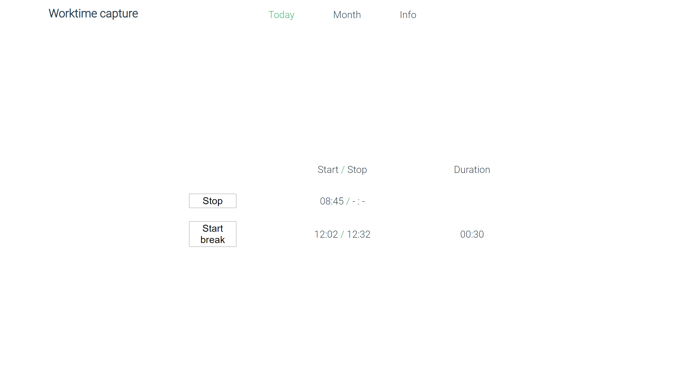
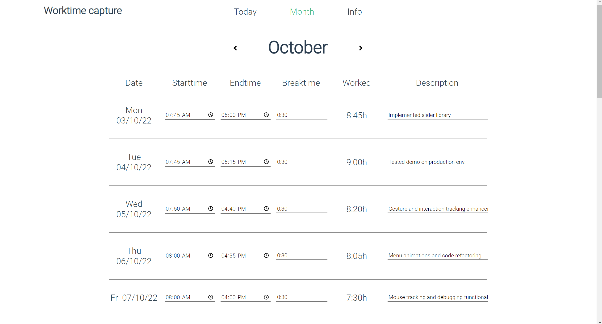
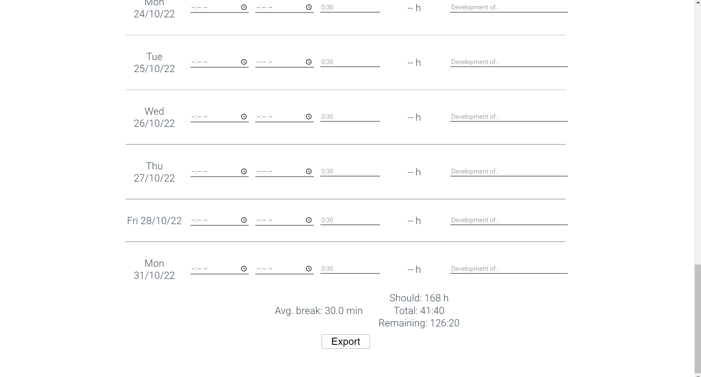

side project
2022
At Ideenion we use an application to capture our work times
that, let's say it this way, has quite some potential in
terms of design and usability.
In order to gain deeper knowledge and skill of Vue,
I thought to myself, it would be a good learning opportunity
to create a work- and break-time capturing tool myself. Saving
the dates in the local browser storage.
Design process:
I first drafted out what basic functionalities I want to provide.
Based on that, I sketched out some ideas with Lunacy
to get a sense for the layout.
Finally, I turned the visual mockup into a minimal viable prototype.
Software and technologies used:
VS code, Lunacy, HTML + CSS and Vue 3
Lessons learned:
The project helped me to make sure that in the future I scan API documentations
more thoroughly before implementing a feature myself that is already provided.
Deepen component based implementation.
Due to the development process being mainly done during the weekends, it
also made me learn more about code readability and taking a step back
again, to reassess the way of a current feature implementation for reevaluation.
Next steps if I were to continue development:
- Including a week section
- exporting the saved time data in .xls as well
- enable customization of your days off instead of the Sa. and Sun. default
- come up with a different design for the day page
Main page of the current day 
List of work days during the selected month (no Saturdays & Sundays) 
Result of the selected month so far 